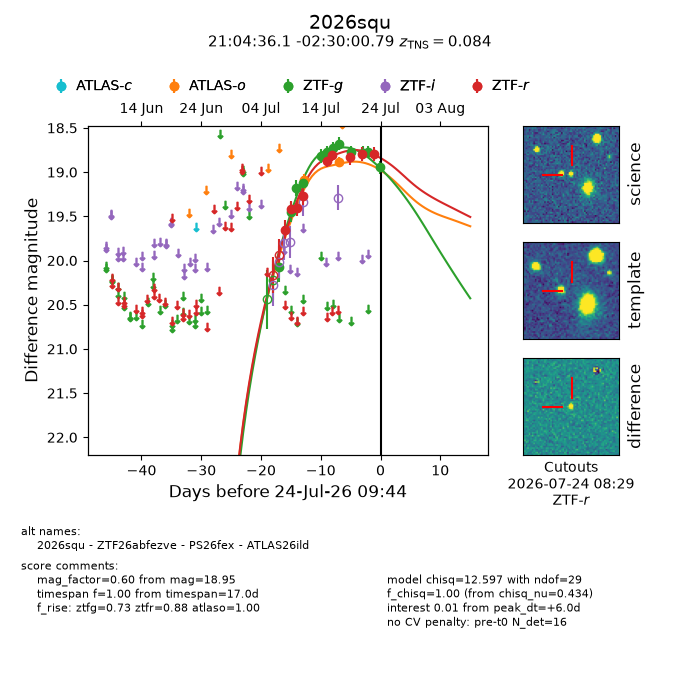
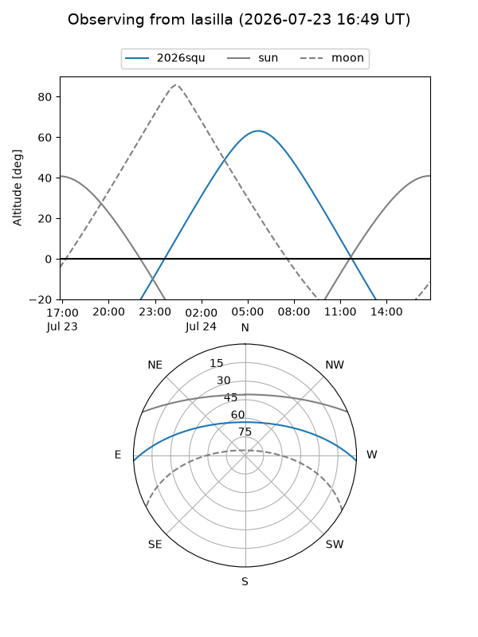
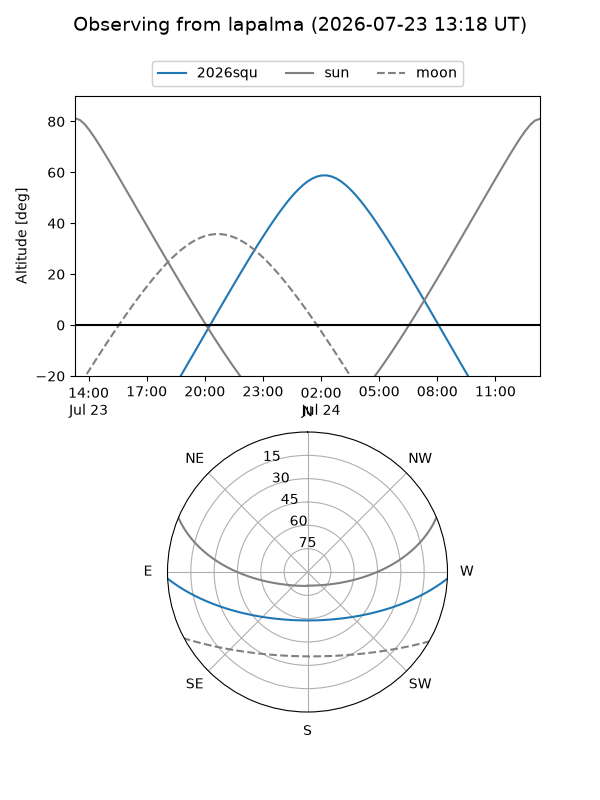
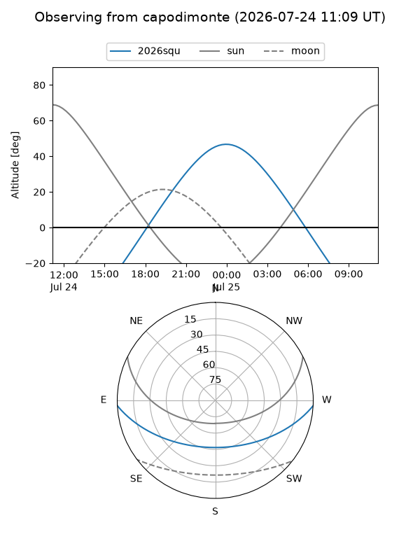
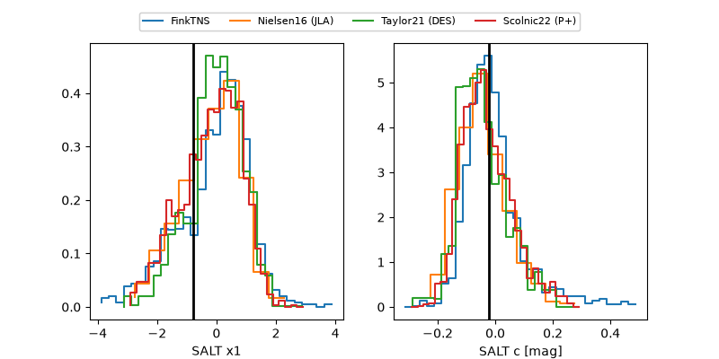

2026squ
Target 2026squ at 2026-07-24 09:46
Aliases and brokers:
FINK-ZTF: ztf.fink-portal.org/ZTF26abfezve
Lasair-ZTF: lasair-ztf.lsst.ac.uk/objects/ZTF26abfezve
ALeRCE-ZTF: alerce.online/object/ZTF26abfezve
YSE-PZ: ziggy.ucolick.org/yse/transient_detail/2026squ
TNS name: wis-tns.org/object/2026squ
Direct TNS query: direct search
alt names
ZTF26abfezve (ztf,fink_ztf)
2026squ (tns,yse)
ATLAS26ild (atlas)
PS26fex (panstarrs)
Coordinates:
equatorial (ra, dec) = 316.1504,-2.50022
equatorial (HMS+DMS) = 21:04:36.11,-02:30:00.79
galactic (l, b) = (47.1262,-30.52624)
Flags:
TNS type: SN Ia
TNS redshift: 0.0840
peak dt: +6.0
Photometry:
last atlaso=18.88, ztfg=18.95, ztfr=18.80
2 atlaso, 12 ztfg, 9 ztfr detections
Lightcurve

Visibility



Additional plots
